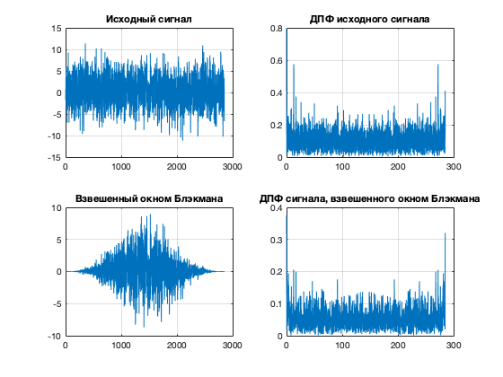
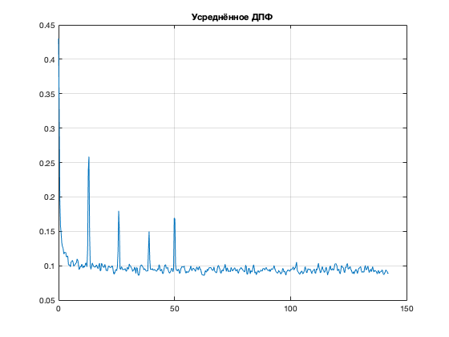

clear;
close all;
fs = 285;
Ns = 70
ts = 0 : 1/fs : Ns * 10-1/fs;
N = length(ts);
F1 = 13;
F2 = 50;
x = 0.4*sin(2*pi*F2*ts) + ...
0.4*sin(2*pi*(F1-0.1)*ts) + ...
0.5*sin(2*pi*F1*ts) + ...
0.4*sin(2*pi*(F1+0.1)*ts) + ...
0.4*sin(2*pi*F1*2*ts) + ...
0.3*sin(2*pi*F1*3*ts) + ...
3*randn(size(ts)) + ...
pinknoise(N);
figure;
plot(x); grid on;
title('Исходный сигнал');
N1 = round(length(ts)/Ns);
x1 = x(1:N1);
F = (0 : N1-1)*fs/N1;
X = abs(fft(x1))*2/N1;
figure;
subplot(2,2,1);
plot(x1); grid on; title('Исходный сигнал');
subplot(2,2,2);
plot(F,X); grid on; title('ДПФ исходного сигнала');
xw = x1.*blackman(N1)';
subplot(2,2,3);
plot(xw); grid on; title('Взвешенный окном Блэкмана');
Xw = abs(fft(xw))*2/N1;
subplot(2,2,4);
plot(F,Xw); grid on; title('ДПФ сигнала, взвешенного окном Блэкмана');
Nseg = 1000;
Xsum = zeros(1,Nseg);
for i =1 : N/Nseg
xtmp = x( (i-1)*Nseg+1 : (i-1)*Nseg+Nseg ).* blackman(Nseg)';
Xsum = Xsum + abs(fft(xtmp))*2/Nseg;
end
Xsum = Xsum/(N/Nseg);
fsum = (0 : Nseg-1)*fs/Nseg;
figure;
plot(fsum(1:Nseg/2),Xsum(1:Nseg/2)); grid on; title('Усреднённое ДПФ');
Ns =
70

 